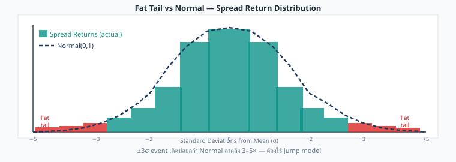
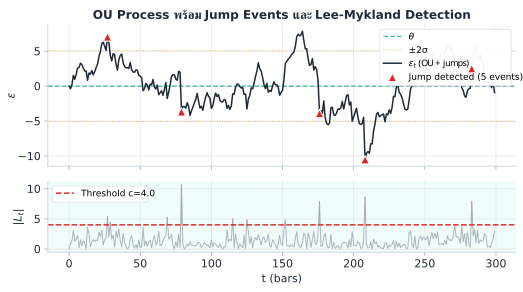

Statistical Arbitrage · บทที่ 8
Jump-Diffusion OU: จัดการ Fat Tail ใน Spread
ตรวจจับ jump events และปรับกลยุทธ์เมื่อ spread กระโดดผิดปกติ
แก่นของบทนี้ — อ่านก่อน
spread เดินตาม OU แต่มี jump discontinuity แทรก — เหตุการณ์ผิดปกติที่ทำให้ spread กระโดดทันทีโดยไม่ผ่าน diffusion ปกติ ต้องตรวจจับและจัดการแยกต่างหาก
$$d\varepsilon = \kappa(\theta - \varepsilon)\,dt + \sigma\,dW + J\,dN$$
8.1 ทำไม OU ปกติไม่พอ
โมเดล OU มาตรฐาน dε = κ(θ−ε)dt + σdW สมมติว่า residual กระจายตัวแบบ Normal — แต่ในความเป็นจริง spread ของสินทรัพย์ crypto มี fat tail : เหตุการณ์ที่ห่างจากค่าเฉลี่ย 4–6σ เกิดบ่อยกว่าที่ Normal distribution คาดไว้มาก
อาการของ fat tail ที่พบในทางปฏิบัติ
Spread กระโดด 3–5σ ใน tick เดียว (ไม่ใช่ค่อยๆ เพิ่ม)
Stop-loss ถูก trigger บ่อยกว่าที่ backtest คาดไว้
Sharpe ratio ใน live trading ต่ำกว่า backtest อย่างมีนัยสำคัญ
Kurtosis ของ residuals > 3 (leptokurtic)

Histogram ของ spread returns (teal) vs Normal(0,1) (เส้นประน้ำเงิน) — หางซ้าย-ขวาหนากว่า Normal มาก เหตุการณ์ ±3σ เกิดบ่อยกว่าที่ Normal คาดถึง 3–5×
เมื่อ fat tail มีอยู่จริง โมเดล OU ล้วนๆ จะ underestimate ความน่าจะเป็นของเหตุการณ์รุนแรง ทำให้ sizing และ stop-loss ผิดพลาด
8.2 Jump-Diffusion SDE
เราขยาย OU model โดยเพิ่ม jump component เข้าไป:
Jump-Diffusion OU — สมการหลัก
$$d\varepsilon = \kappa(\theta - \varepsilon)\,dt + \sigma\,dW + J\,dN$$
κ = mean-reversion speed (เหมือนเดิม)θ = long-run mean (เหมือนเดิม)σdW = diffusion term (Brownian motion ปกติ)dN = Poisson process, P(dN=1 ใน dt) = λ·dt — jump เกิดด้วย intensity λJ = jump size (random variable, distribution ขึ้นกับโมเดล)
สัญชาตญาณ: ส่วนใหญ่ spread เดินแบบ OU ปกติ แต่ทุกครั้งที่ Poisson event เกิด (เฉลี่ยทุก 1/λ หน่วยเวลา) spread กระโดดทันที ด้วย random size J
Component ความหมาย ตัวอย่างค่า κ (kappa) ความเร็วในการกลับหา θ 0.5–5.0 ต่อวัน σ (sigma) Volatility ของ diffusion ส่วน 0.001–0.01 λ (lambda) Jump intensity (jumps/วัน) 0.1–2.0 J (jump size) ขนาดการกระโดด (สุ่ม) ±2–10σ
8.3 Merton vs Kou Jump Model
มีสองโมเดลหลักสำหรับกำหนด distribution ของ jump size J:
Merton Jump Model (1976)
J ~ N(μ_J, σ_J²) — กระจายแบบ Normal
Jump size สุ่มมาจาก Normal distribution — symmetric รอบ μ_J
J ~ N(μ_J, σ_J²)
ตัวอย่าง: μ_J = 0, σ_J = 0.005
→ Jump ส่วนใหญ่อยู่ในช่วง ±1% (±2σ_J)
Kou Double-Exponential Model (2002)
J ~ Asymmetric double exponential — up jump และ down jump ต่างกัน
ด้วยความน่าจะเป็น p : jump ขึ้น ขนาด ~ Exp(η₁) (exponential)1−p : jump ลง ขนาด ~ Exp(η₂)
J = { +Exp(η₁) ด้วยความน่าจะเป็น p
{ -Exp(η₂) ด้วยความน่าจะเป็น 1-p
ตัวอย่าง: p=0.4, η₁=200, η₂=100
→ Down jump มักใหญ่กว่า up jump (tail ซ้ายหนักกว่า)
คุณสมบัติ Merton Kou Distribution ของ J Normal N(μ_J, σ_J²) Double exponential (asymmetric) Symmetry Symmetric (ถ้า μ_J=0) Asymmetric (p ≠ 0.5) Parameters λ, μ_J, σ_J (3 params) λ, p, η₁, η₂ (4 params) Tail behavior Lighter tail Heavier, asymmetric tail Fit ดีเมื่อ Jump ขึ้น-ลงสมมาตร Crash มักใหญ่กว่า rally การใช้ในทางปฏิบัติ ง่าย, เริ่มต้นได้เลย Fit ตลาด crypto ได้ดีกว่า
เมื่อไรควรใช้ Kou แทน Merton?
Spread มักกระโดด ลง แรงกว่ากระโดดขึ้น (เช่น leverage liquidation)
ช่วง funding rate war ที่ขา bear รุนแรงกว่าขา bull
เมื่อ backtest Merton แล้ว over-estimated P(positive jump)
8.4 Lee-Mykland Jump Detection
วิธีตรวจจับ jump ที่ใช้กันมากในทางปฏิบัติคือ Lee-Mykland (2008) ซึ่งสร้าง test statistic จาก bipower variation:
Lee-Mykland Test Statistic
L_t = (ε_t − ε_{t-1}) / σ_BV
σ_BV = bipower variation estimator (robust ต่อ jump ของตัวเอง)
ข้อดีของ bipower variation: ถ้า σ_BV คำนวณจาก squared returns ปกติ jump ขนาดใหญ่จะ inflate σ ทำให้ L_t เล็กลงและพลาด jump แต่ bipower variation ใช้ product ของ adjacent absolute returns ซึ่ง robust กว่า

บน: \(\varepsilon_t\) (OU + jumps) พร้อม jump events ที่ detect ได้ (▲ สีแดง) | ล่าง: Lee-Mykland statistic \(|L_t|\) — เมื่อทะลุ threshold 4.0 ถือว่าเป็น jump
8.5 Pseudo-code: detect_jump()
ต่อไปนี้คือ algorithm สำหรับตรวจจับ jump ด้วย bipower variation:
def detect_jump(residuals, window=30, threshold=4.0):
"""
ตรวจจับ jump ใน residual series ด้วย Lee-Mykland test
Parameters
----------
residuals : array-like -- ε_t series
window : int -- rolling window สำหรับ bipower variation
threshold : float -- |L_t| > threshold → jump
Returns
-------
jumps : bool array -- True ที่ index ที่เป็น jump
L : float array -- test statistic L_t ทุก time step
"""
bipower = compute_bipower_variation(residuals, window)
# bipower variation: sum of |r_t| * |r_{t-1}| (robust ต่อ jump)
sigma_bv = sqrt(bipower / window)
L = diff(residuals) / sigma_bv
# L_t = (ε_t - ε_{t-1}) / sigma_BV
jumps = abs(L) > threshold
return jumps, L
def compute_bipower_variation(residuals, window):
"""BV_t = (π/2) * sum_{i=t-w}^{t} |r_i| * |r_{i-1}|"""
r = diff(residuals)
bv = rolling_sum(abs(r[:-1]) * abs(r[1:]), window)
return (pi / 2) * bv
หมายเหตุการ implement จริง
ใช้ window=30 ถ้า data เป็น minute bars → window = 30 นาที
threshold=4.0 เทียบเท่ากับ p-value < 0.001 สำหรับ Normal distributionหลังจาก flag jump ให้ exclude observation นั้นออกจากการ calibrate σ เพื่อไม่ให้ inflate
ในทางปฏิบัติ ใช้ library realized (R) หรือเขียน custom ใน Python
8.6 วิธีจัดการ Jump ในกลยุทธ์
เมื่อตรวจพบ jump มี 3 approaches หลักที่ใช้กัน:
Approach 1 — หยุด Signal ชั่วคราว (Signal Pause)
เมื่อ detect_jump() = True → ไม่เปิด position ใหม่ชั่วคราวข้อดี: ปลอดภัยสุด ไม่เข้าใน noiseข้อเสีย: พลาด opportunity ถ้า jump เป็น "overreaction" ที่จะ revert
Approach 2 — ขยาย Stop-Loss (Wider Stop)
ปรับ stop-loss จาก ±2σ เป็น ±4σ ชั่วคราวเมื่อ jump detectedข้อดี: ไม่ถูก stop out โดยไม่จำเป็นข้อเสีย: ถ้า jump ไม่ revert จะขาดทุนมากขึ้น
Approach 3 — ลด Position Size (Reduce Size)
ลด size ลง 50% เมื่ออยู่ใน "jump window" (เช่น 10 tick หลัง jump)ข้อดี: balance ระหว่าง opportunity และ riskข้อเสีย: ซับซ้อนกว่า ต้องมี position sizing logic เพิ่ม
Approach เหมาะกับ ความซับซ้อน Risk Signal Pause เริ่มต้น, conservative ต่ำ ต่ำสุด Wider Stop มั่นใจว่า jump จะ revert ปานกลาง ปานกลาง Reduce Size อยากเก็บ opportunity สูง ปานกลาง
บนโต๊ะจริง — Jump Detection ใน Production
Pipeline ที่ใช้จริงสำหรับ crypto stat arb:
Calibrate σ_BV ทุก 4 ชั่วโมง — bipower variation บน 30-bar rolling window; ล้างค่า outlier ออกก่อน fitThreshold สองระดับ: soft = 3.0 (ลด size 50%), hard = 5.0 (pause signal 15 tick) — threshold เดียวตายตัวเสี่ยง miss หรือ false positive สูงExclude jump bars จากการคำนวณ σ_OU และ half-life — jump เดียวสามารถ inflate σ ขึ้น 30–50% ทำให้ entry zone กว้างเกินจริงLog ทุก jump event พร้อม L_t, สาเหตุที่คาดว่าเป็น (funding rate, liquidation, news), และ spread path 30 นาทีหลัง event — ใช้ review ว่า jump revert หรือไม่Revert check: ถ้า spread กลับมาภายใน 10 tick → jump เป็น noise → ควรเปิด position ด้วย size เต็ม; ถ้าไม่กลับภายใน 30 tick → regime shift → stay flat
8.7 Running Example: Bybit↔Lighter และ Funding Rate War
Running Example: Bybit BTCUSDT Perp ↔ Lighter BTCUSDT Perp — Jump Event
ช่วง funding rate war : Bybit ประกาศปรับ funding rate เป็น 0.09% ต่อ 8 ชั่วโมง (ปกติ 0.01%) เพื่อดึง short position
Fitted Jump Model Parameters (90-day calibration)
Model: Merton Jump-Diffusion (J ~ N(μ_J, σ_J²))
Estimated from Bybit↔Lighter BTCUSDT Perp, 90 วัน (tick data):
λ = 0.8 jumps/day (≈ 1 jump ทุก 30h)
μ_J = 0.0% (symmetric — jumps ไม่ bias ทิศทาง)
σ_J = 4 × σ_stat = 4 × 0.003 = 0.012 (1.2%)
σ_BV (bipower variation ช่วงปกติ, 30-bar window):
σ_BV ≈ 0.0018–0.0022 per tick → ใช้ 0.002 ต่อ tick
Probability check (Merton):
P(|J| > 5.5σ_stat | jump occurs) = P(|N(0,4²)| > 5.5) ≈ 17%
P(|move| > 5.5σ_stat | no jump) = P(|N(0,1)| > 5.5) ≈ 0.0000038%
Likelihood ratio: 17% / 0.0000038% ≈ 4,500,000x → unambiguously a jump
ผลกระทบต่อ spread:
Bybit perp premium เพิ่มขึ้นทันทีจาก $10 → $80 ใน 2 นาที (8x)
spread ε กระโดด ~5.5σ_stat = 5.5 × 0.003 = 0.0165 (1.65%)
L_t = Δε / σ_BV = 0.0165 / 0.002 = 8.25 > threshold 4.0 → confirmed jump
การ handle ที่เหมาะสม:
# เมื่อ jump detected
if detect_jump(recent_residuals)[0][-1]:
# Approach 1: หยุด signal 10 tick
pause_signal(duration=10)
# Log สาเหตุ
log_event("funding_rate_jump", size=L_t, exchange="Bybit")
# ถ้ามี open position → ขยาย stop-loss
if has_open_position():
adjust_stop(multiplier=2.0) # 2σ → 4σ
หลัง 15 นาที spread กลับสู่ปกติบางส่วน ($10 → $35) แต่ไม่กลับมาที่ $10 เพราะ funding rate ยังสูง — การ pause signal ช่วยหลีกเลี่ยงการเข้า position ในช่วงที่ spread ยัง elevated
โจทย์ท้ายบท
โจทย์ 8.1 — Jump vs Normal Volatility
Residual ε เปลี่ยนจาก 0.002 เป็น 0.012 ใน 1 tick (dt = 1 วินาที)
ถาม: คำนวณ L_t แล้วตัดสินว่าเป็น jump หรือ normal volatility (threshold = 4.0) พร้อมอธิบายว่าทำไม
ดูคำตอบ
คำนวณ L_t:
Δε = 0.012 − 0.002 = 0.010
L_t = Δε / σ_BV = 0.010 / 0.002 = 5.0
เนื่องจาก |L_t| = 5.0 > threshold 4.0 → เป็น Jump
เหตุผล: การเคลื่อนที่ 5σ ใน 1 tick นั้นน่าจะเกิดจาก jump discontinuity ไม่ใช่ diffusion ปกติ เพราะ Normal distribution ให้ P(|Z|>5) ≈ 0.00006% ซึ่งแทบจะเป็นไปไม่ได้ใน single tick
สำหรับ OU ปกติ การขยับ 5σ ต้องใช้เวลา ~25 ticks (variance เพิ่มเชิงเส้น) การเกิดใน 1 tick จึงชัดเจนว่าเป็น jump event
โจทย์ 8.2 — Merton vs Kou: เลือกใช้เมื่อไร
จากข้อมูล historical spread ของ Bybit↔Lighter พบว่า:
Jump ลง (negative) เฉลี่ย −6.2σ
Jump ขึ้น (positive) เฉลี่ย +2.8σ
สัดส่วน: 60% down jump, 40% up jump
ถาม: ควรใช้ Merton หรือ Kou? เพราะอะไร?
ดูคำตอบ
ควรใช้ Kou Double-Exponential Model เพราะ:
Asymmetric jump size: down jump ใหญ่กว่า up jump ชัดเจน (−6.2σ vs +2.8σ) — Merton แบบ Normal จะบังคับ symmetric ทำให้ fit ไม่ดีAsymmetric probability: p(down) = 60% ≠ 50% — ต้องการ parameter p ≠ 0.5 ซึ่ง Kou รองรับ แต่ Merton ไม่สะดวกExponential tail ใน Kou: หาง down-jump หนักกว่า (η₂ ต่ำกว่า) เหมาะกับลักษณะ liquidation cascade
Merton เหมาะกว่าเมื่อ jump size ทั้งสองทิศสมมาตรและมีโอกาสเกิดเท่ากัน ซึ่งไม่ใช่กรณีนี้
โจทย์ 8.3 — Bybit Funding Rate 3x: ควรทำอย่างไร
Bybit ประกาศเพิ่ม funding rate จาก 0.01% เป็น 0.03% ต่อ 8 ชั่วโมง (3x)
ถาม: ควร flag เหตุการณ์นี้เป็น (anticipated) jump แล้วทำอย่างไรในกลยุทธ์?
ดูคำตอบ
ใช่ ควร flag เป็น anticipated jump:
แม้ detect_jump() ยังไม่ triggered (spread ยังไม่กระโดด) แต่ข่าว funding rate เป็น leading indicator ที่บอกว่า jump น่าจะเกิดในอีกไม่นาน
วิธีจัดการ:
หยุด opening new positions ทันที — รอดูว่า spread จะ react อย่างไรก่อนลด threshold ชั่วคราว จาก 4.0 → 2.5 เพื่อ detect จะไวขึ้นถ้า jump เริ่มเกิดเตรียม exit strategy: ถ้ามี position ที่ Long Lighter / Short Bybit → jump จาก funding rate war อาจกดดัน Bybit premium ซึ่งเป็น favorable แต่ต้องระวัง volatilityLog event: บันทึกเวลาที่ข่าวออก เพื่อ review ว่า model ควรรวม news-based triggers หรือไม่
หลักการ: jump model ช่วยได้เมื่อเกิดแล้ว แต่ถ้ารู้ล่วงหน้าว่าจะเกิด → จัดการ proactively ดีกว่า
คณิตที่พัง — เมื่อ Jump Model พัง
Jump-diffusion model มีสมมติฐานที่แตกในตลาด crypto:
λ ไม่คงที่: jump intensity เปลี่ยนตามระบอบตลาด — ช่วง bull market λ ≈ 0.2/day, ช่วง crisis λ ≈ 5+/day; ถ้า calibrate ด้วยช่วง calm แล้วนำไป apply ช่วง crisis จะ underestimate jump risk อย่างรุนแรงJump clustering: jump มักเกิดต่อเนื่อง (jump ลูกโซ่) ไม่ใช่ Poisson process ที่ independent — หลัง jump ใหญ่ 1 ครั้ง P(jump ครั้งต่อไปใน 5 นาที) สูงกว่า baseline 3–10×Calibration lag: Merton/Kou parameters (λ, σ_J) ต้อง calibrate บน historical data ที่ต้องมี jumps ในตัวเอง — ถ้า training window ไม่มี event ที่ใหญ่พอ model จะประเมิน J ต่ำเกินJump ↔ regime shift สับสน: บางครั้งสิ่งที่ดูเหมือน jump คือการเปลี่ยน regime (β ใหม่, equilibrium ใหม่) ไม่ใช่ event ชั่วคราว — ถ้าใช้ Approach 2 (wider stop) กับ regime shift จะขาดทุนต่อเนื่องไม่มีที่สิ้นสุด
Safeguard: ตั้ง maximum drawdown per jump event (เช่น 0.5% NAV) และ force-exit ถ้า spread ยัง elevated หลัง 30 tick โดยไม่รอ reversion
อ้างอิงสำคัญ (References)
Merton, R. C. (1976). Option pricing when underlying stock returns are discontinuous. Journal of Financial Economics , 3(1–2), 125–144. — Merton jump-diffusion model พร้อม Gaussian jump size ที่ Ch.8 นำเสนอKou, S. G. (2002). A jump-diffusion model for option pricing. Management Science , 48(8), 1086–1101. — Kou double-exponential jump model; asymmetric jump sizes (upside vs downside) ที่เหมาะกับ crypto spreadsLee, S. S., & Mykland, P. A. (2008). Jumps in financial markets: A new nonparametric test and jump dynamics. Review of Financial Studies , 21(6), 2535–2563. — Lee-Mykland jump detection ด้วย bipower variation ที่ใช้ใน pseudo-code Ch.8Barndorff-Nielsen, O. E., & Shephard, N. (2004). Power and bipower variation with stochastic volatility and jumps. Journal of Financial Econometrics , 2(1), 1–37. — รากฐานทฤษฎีของ bipower variation สำหรับ jump detection
Ch.8 Jump-Diffusion OU | ต่อไป → Ch.9: Regime-Switching OU
🏛️ ห้องสมุด Options & Arbitrage Statistical Arbitrage — เริ่มต้น